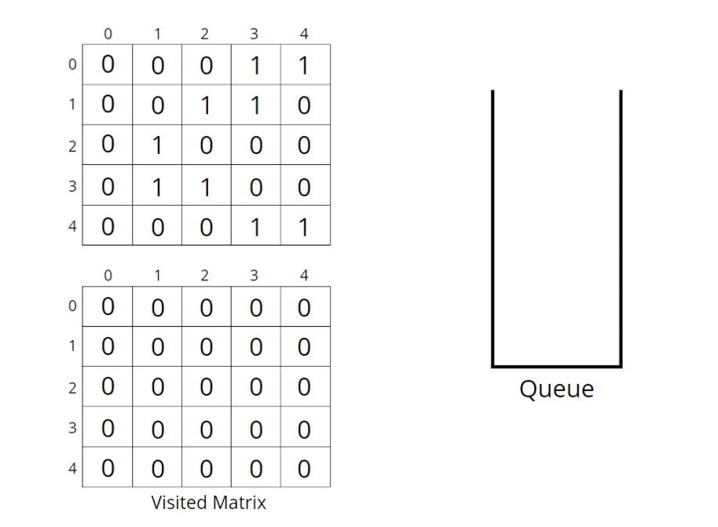

Problem Statement: You are given an N x M binary matrix grid, where 0 represents a sea cell and 1 represents a land cell. A move consists of walking from one land cell to another adjacent (4-directionally) land cell or walking off the boundary of the grid. Find the number of land cells in the grid for which we cannot walk off the boundary of the grid in any number of moves.
Examples:
Example 1:
Input:
Output: 3
Explanation: The highlighted cells represent the land cells.
Example 2:
Input:
Output: 4
Explanation: The highlighted cells represent the land cells.
Solution
Disclaimer: Don't jump directly to the solution, try it out yourself first.
Intuition:
The land cells present in the boundary cannot be counted in the answer as we will walk off the boundary of the grid. Also, land cells connected to the boundary land cell can never be the answer.
The intuition is that we need to figure out the boundary land cells, go through their connected land cells and mark them as visited. The sum of all the remaining land cells will be the answer.
Approach:
We can follow either of the traversal techniques as long as we are starting with a boundary element and marking all those 1s connected to it. We will be solving it using BFS traversal, but you can apply DFS traversal as well, we have applied DFS traversal to solve a similar problem in the previous article.
Breadth First Search, BFS is a traversal technique where we visit the nodes level-wise, i.e., it visits the same level nodes simultaneously, and then moves to the next level.
Initial configuration:
- Queue: Define a queue and insert the coordinates of the cell <row, column> which are in the boundary and are marked as 1. The boundary cells will always have row i = 0 or row i = n-1 or col j = 0 or col j = m-1.
- Visited array: an array initialized to 0 indicating unvisited cells, apart from the ones in the boundary which are already in the queue ds.
The algorithm steps are as follows:
- For BFS traversal, we need a queue data structure and a visited array. Create a corresponding visited array.
- Push the coordinates of boundary nodes in the queue and mark them as visited.
- Start the BFS traversal, pop out an element from the queue every time and travel to all its unvisited neighboring land cells in the 4 directions. For every unvisited node, push it {row, col} into the Q and mark it as visited to avoid multiple traversals in the future.
- Repeat the steps until the queue becomes empty. When all the boundaries are traversed and corresponding sets of 1s are marked as visited, use a counter variable to count the number of remaining unvisited land cells.
- Return the value of the counter as it indicates the number of land cells that cannot cross the boundary.
Consider the following illustration to understand how BFS traverses the matrix and finds the number of land cells in the grid for which we cannot walk off the boundary of the grid in any number of moves.

How do set boundaries for 4 directions?
The 4 neighbors will have the following indexes:
Now, either we can apply 4 conditions or follow the following method. From the above image, it is clear that the delta change in the row is -1, +0, +1, +0. Similarly, the delta change in the column is 0, +1, +0, -1. So we can apply the same logic to find the neighbors of a particular pixel (<row, column>).
Code:
#include <bits/stdc++.h>
using namespace std;
class Solution {
public:
int numberOfEnclaves(vector<vector<int>> &grid) {
queue<pair<int,int>> q;
int n = grid.size();
int m = grid[0].size();
int vis[n][m] = {0};
// traverse boundary elements
for(int i = 0;i<n;i++) {
for(int j = 0;j<m;j++) {
// first row, first col, last row, last col
if(i == 0 || j == 0 || i == n-1 || j == m-1) {
// if it is a land then store it in queue
if(grid[i][j] == 1) {
q.push({i, j});
vis[i][j] = 1;
}
}
}
}
int delrow[] = {-1, 0, +1, 0};
int delcol[] = {0, +1, +0, -1};
while(!q.empty()) {
int row = q.front().first;
int col = q.front().second;
q.pop();
// traverses all 4 directions
for(int i = 0;i<4;i++) {
int nrow = row + delrow[i];
int ncol = col + delcol[i];
// check for valid coordinates and for land cell
if(nrow >=0 && nrow <n && ncol >=0 && ncol < m
&& vis[nrow][ncol] == 0 && grid[nrow][ncol] == 1) {
q.push({nrow, ncol});
vis[nrow][ncol] = 1;
}
}
}
int cnt = 0;
for(int i = 0;i<n;i++) {
for(int j = 0;j<m;j++) {
// check for unvisited land cell
if(grid[i][j] == 1 & vis[i][j] == 0)
cnt++;
}
}
return cnt;
}
};
int main() {
vector<vector<int>> grid{
{0, 0, 0, 0},
{1, 0, 1, 0},
{0, 1, 1, 0},
{0, 0, 0, 0}};
Solution obj;
cout << obj.numberOfEnclaves(grid) << endl;
}
Output: 3
Time Complexity: O(NxMx4) ~ O(N x M), For the worst case, assuming all the pieces as land, the BFS function will be called for (N x M) nodes and for every node, we are traversing for 4 neighbors, so it will take O(N x M x 4) time.
Space Complexity ~ O(N x M), O(N x M) for the visited array, and queue space takes up N x M locations at max.
import java.util.*;
class Solution {
int numberOfEnclaves(int[][] grid) {
Queue<Pair> q = new LinkedList<Pair>();
int n = grid.length;
int m = grid[0].length;
int vis[][] = new int[n][m];
// traverse boundary elements
for(int i = 0;i<n;i++) {
for(int j = 0;j<m;j++) {
// first row, first col, last row, last col
if(i == 0 || j == 0 || i == n-1 || j == m-1) {
// if it is a land then store it in queue
if(grid[i][j] == 1) {
q.add(new Pair(i, j));
vis[i][j] = 1;
}
}
}
}
int delrow[] = {-1, 0, +1, 0};
int delcol[] = {0, +1, +0, -1};
while(!q.isEmpty()) {
int row = q.peek().first;
int col = q.peek().second;
q.remove();
// traverses all 4 directions
for(int i = 0;i<4;i++) {
int nrow = row + delrow[i];
int ncol = col + delcol[i];
// check for valid coordinates and for land cell
if(nrow >=0 && nrow <n && ncol >=0 && ncol < m
&& vis[nrow][ncol] == 0 && grid[nrow][ncol] == 1) {
q.add(new Pair(nrow, ncol));
vis[nrow][ncol] = 1;
}
}
}
int cnt = 0;
for(int i = 0;i<n;i++) {
for(int j = 0;j<m;j++) {
// check for unvisited land cell
if(grid[i][j] == 1 & vis[i][j] == 0)
cnt++;
}
}
return cnt;
}
public static void main(String[] args)
{
int grid[][] = {
{0, 0, 0, 0},
{1, 0, 1, 0},
{0, 1, 1, 0},
{0, 0, 0, 0}};
Solution ob = new Solution();
int ans = ob.numberOfEnclaves(grid);
System.out.println(ans);
}
}
class Pair {
int first;
int second;
public Pair(int first, int second) {
this.first = first;
this.second = second;
}
}
Output: 3
Time Complexity: O(NxMx4) ~ O(N x M), For the worst case, assuming all the pieces as land, the BFS function will be called for (N x M) nodes and for every node, we are traversing for 4 neighbors, so it will take O(N x M x 4) time.
Space Complexity ~ O(N x M), O(N x M) for the visited array, and queue space takes up N x M locations at max.
Special thanks to Vanshika Singh Gour for contributing to this article on takeUforward. If you also wish to share your knowledge with the takeUforward fam, please check out this article. If you want to suggest any improvement/correction in this article please mail us at write4tuf@gmail.com